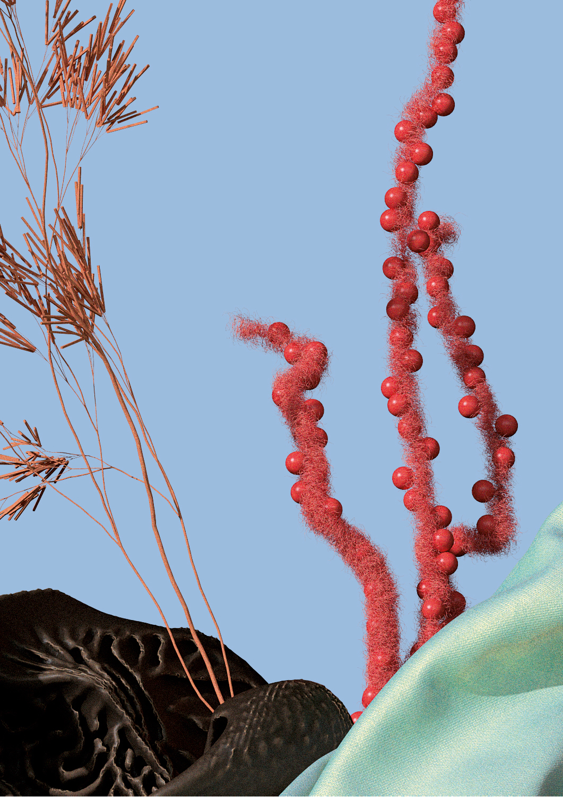
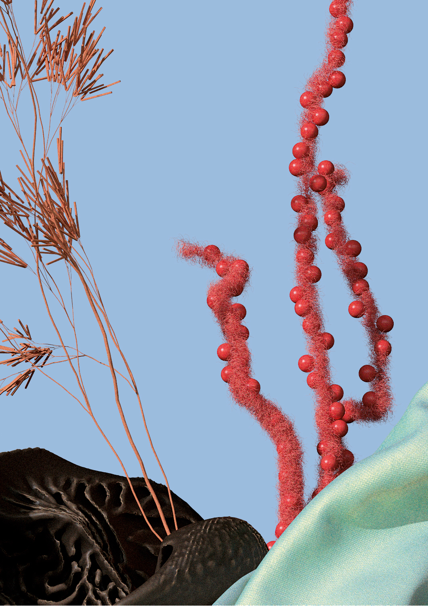

Stories Collective "Circular Innovation"
Stories Collective é uma plataforma digital bilíngue que varia seu conteúdo de acordo com o tema de cada edição. Cada publicação junta pequenas histórias, entrevistas, artigos e editoriais de moda.
Em 2019 fui convidado, junto com Leonardo Bortolussi, para colaborar com a segunda edição impressa da revista, cujo tema foi "Imaginando o Futuro", e ilustrar a matéria "Inovação circular em tecidos e moda".
Colaboração com Estúdio Ally Fukumoto
Cliente: Stories Collective
Ano: 2019
Direção de Arte e Design Gráfico: Estúdio Ally Fukumoto
3D: Bruno Faiotto & Leonardo Bortolussi
Matéria: Arianna Nicoletti

 
